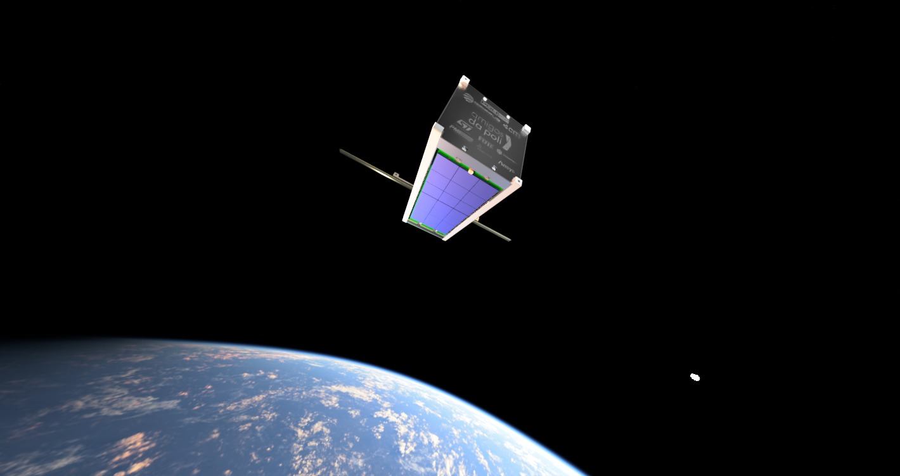

CubeDesign 2026Escola Politécnica · USP
Hermes · Payload
ADS-B receiver
The primary payload listens to aircraft transponders at 1090 MHz and turns the raw radio signal into flight data, entirely on board.

01 · Antenna
Patch antenna
Corner-truncated, 1090 MHz, designed in Ansys HFSS, facing Earth
02 · Radio
RTL-SDR V3
Samples the band at 2.0 MS/s
03 · Processing
Raspberry Pi Zero W
C software demodulates, checks CRC and decodes each frame
04 · Output
To the OBC
Identity, position, altitude and speed queued for downlink